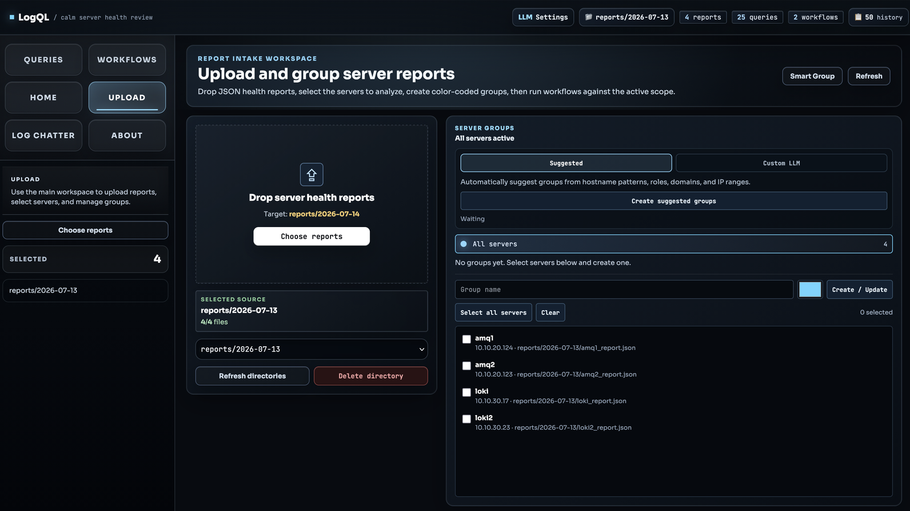
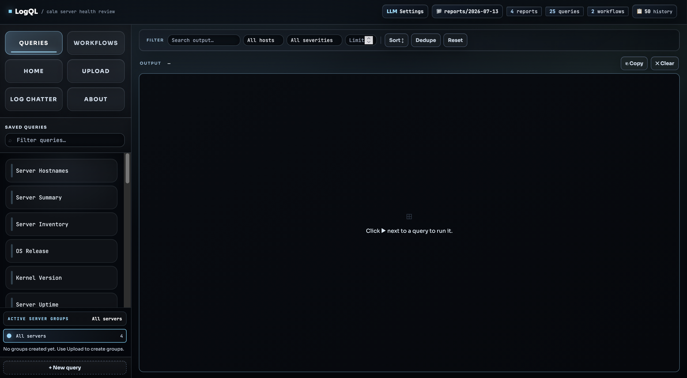
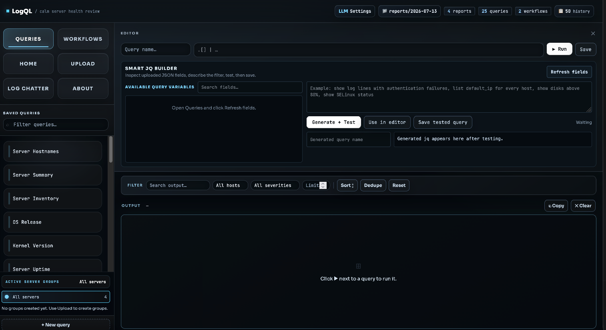
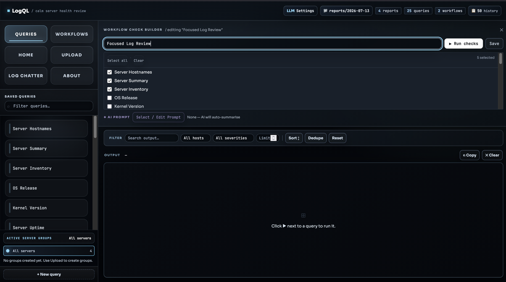
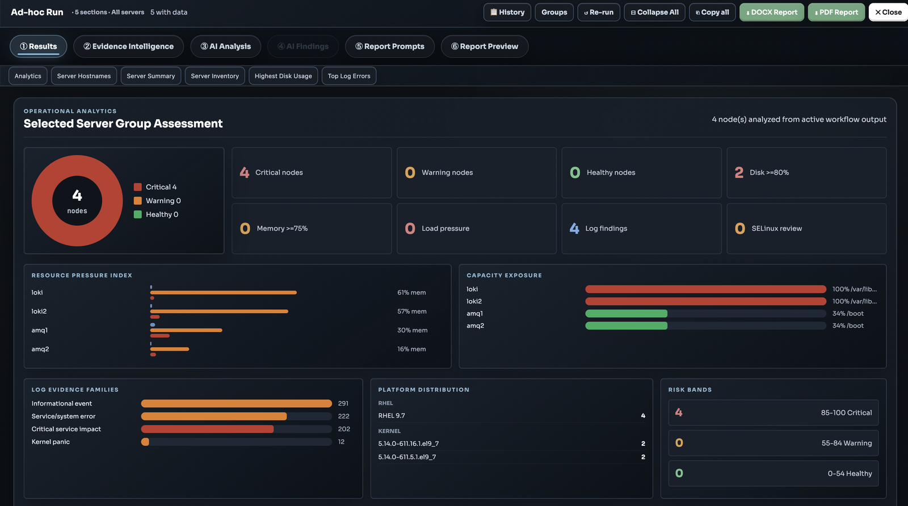
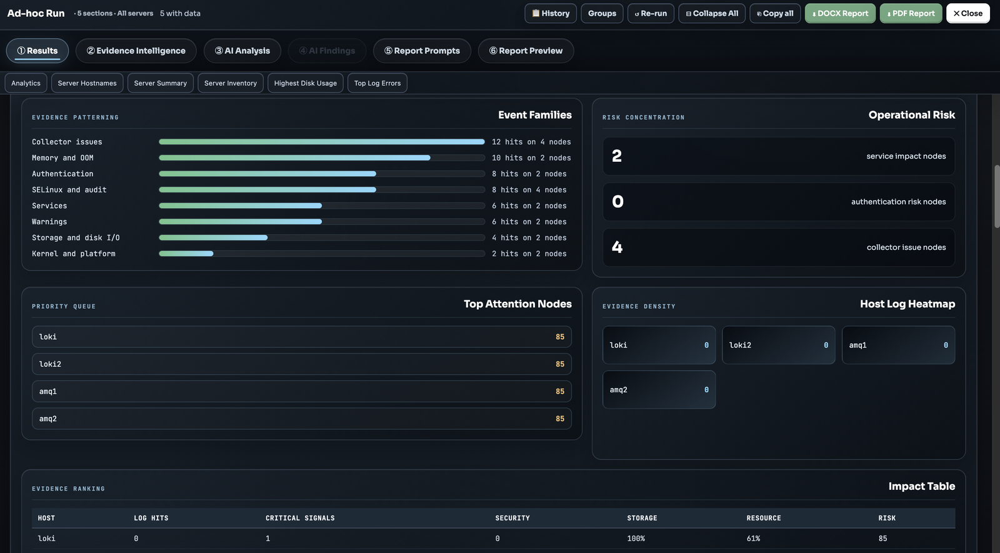
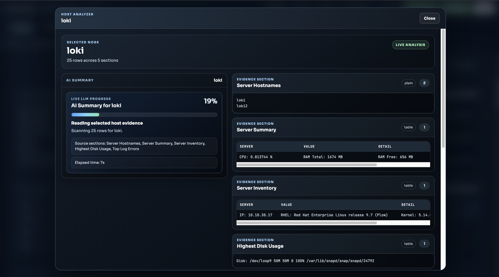
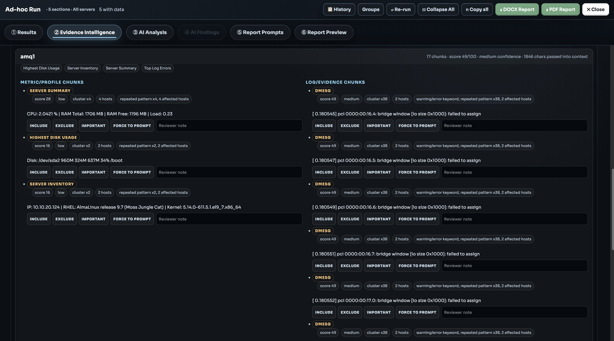

Introduction
Before talking about the tool, I need to explain the real trigger behind this idea.
For some time now, I have been thinking about one practical problem that I have been facing in infrastructure and support work.
Here is the trigger point.
One day, our infrastructure and support team received a customer ticket to conduct a health check for 150+ servers.
Here is the deal: we did not have a proper tool for this. These were critical infrastructure servers, and the data was sensitive because it was related to a banking-sector environment. Global AI models were not a solution here because multiple levels of logs were involved, including network-layer information.
Also, we used Ansible to collect the data as string outputs. I was the person responsible for this work, and I was not ready to do it manually.
A health-check report may look simple, but it can still expose enough information to make a company uncomfortable.
So the easy answer, "just upload it to GPT and ask," was out of the window. Also, you and I both know a local LLM running in a lab or on a Mac is not capable of handling this in the traditional raw-upload way.
That is the idea behind LogQL-Interface.
I know, I know, not a good name. Just forget it and hear me out on the idea.
It started as a simple health-check helper, but the real idea became bigger:
How can we analyze sensitive infrastructure data with AI
without sending the raw data to a global AI service?
The answer I wanted to test was local AI. Run a private LLM locally, keep the data inside the machine or internal network, and use that local model to help with troubleshooting and health-check review.
But that immediately creates another problem.
Small local LLMs are safer, but they are not as strong as the big global models. They usually have less reasoning power, smaller context windows, and weaker recommendations when we throw too much messy data at them.
So the real problem is not only privacy.
The real problem is this:
How do we make a small local LLM useful
when the data is large, messy, sensitive, and hard to filter manually?
That is where the middle layer comes in.
The Real Idea
The real idea is not to replace GPT with a local model and send the same huge raw file to it.
That will not work well.
A small model running locally on a laptop or small server cannot magically understand everything if we give it thousands of mixed log lines, repeated errors, normal messages, irrelevant output, and noisy health-check data.
The better idea is:
Raw sensitive data
→ intelligent middle layer
→ clean evidence package
→ local private LLM
→ evidence-backed explanation
This middle layer is the important part.
It reads the data before the LLM sees it. It filters the noise. It ranks what matters. It groups repeated findings. It reduces the context. It keeps the original evidence available. Then it gives the local model a smaller and cleaner package to review.
That is the whole trick.
The local model does not need to be perfect. The application around it has to prepare the work properly.
Why Raw Logs Are Hard For AI
When we troubleshoot manually, we do not read every line with the same attention.
We look for patterns. We ignore known noise. We check which host is affected. We compare disk usage. We notice repeated failures. We separate a real problem from a harmless warning.
But when we send raw data to a model, we often skip that thinking and expect the model to do everything.
That is where weak local models struggle.
They may miss the key line. They may summarize too generally. They may recommend "monitor the system" because the context was too messy. They may focus on the wrong warning because the real signal was buried under repeated noise.
This is not always the model's fault.
Sometimes the input is simply bad.
If the input is messy, the answer will also be messy.
That is why I started thinking less about "how to make the LLM smarter" and more about "how to make the evidence cleaner before it reaches the LLM."
This Is Not LLM Training
One important point: this is not LLM training.
The application is not changing the model. It is not fine-tuning it. It is not teaching the model new knowledge permanently.
The model stays the same.
What changes is the context given to the model.
Instead of sending a large raw dump, the application sends a prepared evidence pack:
- which server is affected
- what issue was detected
- how often it repeated
- which log line proves it
- whether it is disk, memory, login, service, kernel, or security related
- whether similar noise was seen before
- what the reviewer marked as important
This is closer to evidence filtering, context reduction, and prompt grounding.
In simple words: do not train the model first. Clean the evidence first.
That is how a smaller local model becomes useful.
The Middle Layer Is The Product
At first, it is easy to think the LLM is the product.
But in this type of tool, I think the middle layer is the real product.
The local LLM is only the brain that writes and explains. The middle layer is the system that decides what the brain should see.
It should understand that not every line has the same value.
A repeated authentication failure is more important than a normal startup message. A kernel panic or OOM event should not be buried under informational logs. A real filesystem at 95 percent usage matters more than a pseudo-filesystem showing 100 percent. A known false positive should not dominate the report again and again.
This middle layer should:
- detect useful evidence
- remove obvious noise
- group repeated patterns
- rank high-risk findings
- reduce context size
- prepare task-specific context
- keep traceability to the original source
- allow the user to approve or correct the finding
That is the layer that makes private AI practical.
Without it, we are only running a weak local chatbot against difficult operational data.
With it, even a small local LLM can help.
Why The Interface Matters
There is another problem that is easy to miss.
Even if filtering is the right solution, who will do the filtering?
A senior engineer may know how to reduce a log file, choose the right evidence, and write a strong prompt. But many users do not. A junior admin, a small IT team, or a non-technical user may only know that they have a health-check file and need to understand what is wrong.
They may not know:
- which log lines matter
- what to remove from the context
- how to fit the model's context window
- how to ask the model properly
- what evidence a vendor needs
- how to separate real risk from normal noise
So the interface cannot just be a blank prompt box.
The tool should not force the user to become a prompt engineer.
Instead, the interface should offer guided actions:
- Check overall health
- Find urgent risks
- Explain disk issues
- Review login failures
- Summarize important log errors
- Prepare vendor handoff report
- Prepare manager summary
The user chooses the intent. The application builds the technical context behind the scenes.
That is where the middle layer becomes useful for real people. It hides the complexity of prompt engineering, but it does not hide the evidence.
A Simple App Can Still Be Powerful
This is the part I like most about the idea.
LogQL-Interface is not a big enterprise platform. It is just a simple draft application. But even a simple application can be useful if it solves the right part of the problem.
With a laptop, a small local LLM, and a good evidence layer, you can still troubleshoot issues and review health-check data in a private way.
It may not replace a senior engineer. It may not beat a large global model in raw intelligence. But it can help with the first pass:
- what looks risky
- which server needs attention
- what evidence supports the finding
- what should be checked next
- what can be shared with a vendor
- what should go into the report
That is already useful.
For a small environment, this can be enough to reduce manual work and make the health-check process more consistent.
The cool part is that the power does not come only from the model. It comes from the flow:
small model + clean evidence + guided workflow = useful private troubleshooting
That is the impression I want this tool to give.
Not "look how advanced the AI is."
More like:
Look how much better local AI becomes
when the application prepares the evidence properly.
What The Draft Screens Show
The screenshots below are not a polished product demo. They are more like a proof of the idea: can a small local LLM become useful if the application prepares the work properly before asking the model?

Upload and grouping. This is where the sensitive health-check reports enter the local workspace. The user can choose a report folder, select servers, and create groups. The grouping can be manual, suggested from hostname and IP patterns, or helped by a local LLM when the user gives a simple instruction like "group the application servers together." The point is simple: the user does not need to know the perfect prompt or filtering logic before starting.

Individual queries. Each saved query is a small lens over the uploaded data. One query can show hostnames, another can show server summary, disk usage, OS release, kernel version, or top log errors. The output can be searched, sorted, deduped, and filtered by host or severity. This helps even small issues become visible before they are buried inside the full report.

Smart query builder. This is for the person who does not know jq, JSON paths, or prompt engineering. They can describe what they want in normal language. The configured local/private LLM can suggest a filtering query, the app tests it against the available fields, and only then the user can save it. So the LLM is not blindly answering from raw data. It is helping build the filter that prepares better evidence.

Workflow builder. After individual queries are working, they can be chained into one repeatable workflow. For example, a "Focused Log Review" can run server inventory, summary, disk, and log checks together. This is useful because troubleshooting should not depend on remembering every manual step each time. The workflow becomes a small review process.

Operational dashboard. After a workflow runs, the app shows the first-pass picture: critical nodes, warning nodes, healthy nodes, disk pressure, memory pressure, log findings, platform distribution, and risk bands. This gives a clear view before AI writes a paragraph. The dashboard is not replacing the engineer. It is giving the local LLM and the human a cleaner starting point.

Log categorization and recommendations. The app groups log evidence into event families such as collector issues, memory/OOM, authentication, SELinux/audit, services, warnings, storage, and kernel/platform. This is where small recommendations can start. If a pattern repeats across hosts, the app can push it higher. If it is only noise, the reviewer can push it down. This makes the local LLM's job easier because it receives organized evidence instead of a random log dump.

Individual server summary. Sometimes the question is not "what is wrong with the whole environment?" It is "what is happening on this one server?" The host analyzer focuses on one node, shows the selected evidence sections, and lets the local LLM summarize that host from the visible proof. That keeps the answer smaller, more private, and easier to verify.

Evidence Intelligence. This is the real middle layer. It breaks the report into metric chunks and log chunks, scores them, groups repeated patterns, tracks confidence, and shows how much context will be passed to the model. The reviewer can include, exclude, mark important, force evidence into the prompt, or add a note. This is how the application prepares a clean evidence vault for the local LLM. Day by day, that vault can make reviews more accurate because the process keeps better evidence and better reviewer decisions. But again, this is not LLM training. It is better context preparation.
How I See The Flow
The workflow I want is simple.
First, the user uploads sensitive server data into the local application. The data can be a health-check JSON file, log bundle, or troubleshooting output.
Second, the application reads the data and extracts useful evidence. It does not send the full raw file to the model immediately.
Third, the middle layer filters and ranks the evidence. It decides what is likely important, what is repeated, what may be noise, and what should be preserved for traceability.
Fourth, the application builds a smaller context package for the local LLM. The context should match the task. Disk questions should receive disk evidence. Security questions should receive login, audit, and SELinux evidence. Report questions should receive the top findings and supporting proof.
Fifth, the local LLM reviews the prepared evidence and writes an explanation, recommendation, or summary.
Sixth, the human reviews the output. If something is wrong, the user can mark evidence as important, exclude noise, or add a note.
Finally, the application creates a report that is backed by the evidence.
That is the whole idea in one line:
private data stays local,
the middle layer prepares the evidence,
the local LLM explains it,
and the human approves the result.
What LogQL-Interface Proves
LogQL-Interface is still a draft.
It needs better screens, cleaner workflows, stronger validation, better report templates, and more testing. I am not trying to present it as a finished product.
But it proves something important:
Small local LLMs can help with sensitive troubleshooting
if we do not ask them to read everything blindly.
The application proves that the useful architecture is not only "connect to AI." The useful architecture is:
sensitive data
→ evidence extraction
→ intelligent filtering
→ context matching
→ local LLM review
→ human-approved report
That is the direction I want to continue improving.
I am not a programmer by background, but I know the pain this is trying to solve. In real support work, the hard part is not always finding data. The hard part is turning sensitive, messy, technical data into something useful without exposing it and without wasting hours manually preparing it.
This is why I see LogQL-Interface as more than a health-check report generator.
It is a proof of a private AI workflow for infrastructure work.
The Bigger Point
For me, the bigger point is simple.
AI in infrastructure should not start with a chatbot.
It should start with evidence.
Global AI is powerful, but sensitive data cannot always go there. Local AI is private, but it is often weaker. The bridge between those two realities is the middle layer.
That middle layer filters, ranks, reduces, and prepares the data. It also gives non-technical users a simple interface so they do not need to understand prompt engineering or context windows.
That is the real idea behind LogQL-Interface:
private data
→ intelligent middle layer
→ small local secured LLM
→ evidence-backed troubleshooting
If this continues to evolve, I think tools like this can make local AI more useful for real operational work, especially in small environments where even a laptop-based local model can help review health checks, troubleshoot common issues, and prepare cleaner reports.